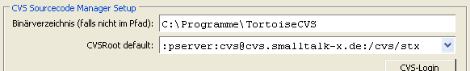
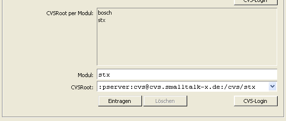

CVS Repository Setup Dialog
For an introduction to source code management,
please consult the
Programmer's Guide to ST/X.
In a single repository setup, all of the sources of the system are contained in
one big repository - this includes the sources of the base system classes, as well as
the sources of any application.
Notice, that with the exception of eXept itself and
a number of customers with special contract, this is normally not a realistic setup
for most other users
(in fact, even within eXept, multiple cvs servers are used for individual projects).
In a single repository setup, all that needs to be configured, is the CVSROOT of a repository,
which contains source containers for all projects.
As an example, the following setting will acomplish this:

(Notice, that the above picture also demonstrates a setup with a changed cvs-binary directory)
In this concrete example, all source-requests for all projects (i.e. not only the stx-projects) will be
tried to be resolved from the repository located on the "cvs.smallalk-x.de"-host.
In a multiple repository setup, various cvs repositories are responsible for resolving
source requests. The repository is choosen by the module component of the packageID
(i.e. the first component up to the separating colon).
For almost all situations, this is the recommend setup, and the most useful setting would be:
- Use a repository on one of you own hosts as the default CVSROOT. For performance reasons,
this may even be a local cvs installation on your development machine,
or at least a machine within your local network.
- Use the eXept repository
("
:pserver:cvs@cvs.smalltalk-x.de:/cvs/stx")
for all projects under the "stx" module.
I.e. in the settings dialog, add a per-module entry for "stx" as follows:

- If not already enabled, now enable the repository caching mechanism.
If on,
checked out source files are cached on the local machine to speed up future accesses.
Please do expect some initial delays, when source files are fetched for the very first time
(this will lead to short delays in the browser,
whenever it needs access to a sourcefile,
which is not cached has not been previously fetched).
These delays will vanish as soon as enough source files have been cached.
Please refer to your CVS-Installation's user manual, online help or command usage documentation on
how to initially setup and maintain a cvs resository.
Additional data security is optained, by using a master repository,
which is periodically copied to a slave repository, which is given to third party users.
For example, in the eXept setup, the repository at
":pserver:cvs@cvs.smalltalk-x.de:/cvs/stx"
is actually only a passive copy of a fraction of the real repository - sensitive parts and
customer projects are not visible in that slave repository.
Optionally specifies the path to the "cvs" (or "cvs.exe") command.
This is only required if you do not have cvs installed along the default PATH,
or if you want to use your own private version of the cvs command.
Specifies the CVSROOT (see cvs documentation) for all classes which do not
belong to a cvs-module listed in the CVSRoot-per-module list.
I.e. its the fallback CVSRoot used for all other classes, not listed below.
In ST/X, class packages form a hierarchical tree and are mapped in the cvs
repository to source file containes located in subdirectories below a so called
module root. The module itslef is specified by the first component of a package
path.
For example:
The "Array"-class is found in the "stx:libbasic" package.
Therefore, its module is "stx" and its cvs container is found in the "libbasic"
sub-directory, of the CVS-repository which has been associated to the "stx" module.
Placing your own packages into a separate module (typically, you would use your company name
as module-name) and specifying a separate CVSRoot for this module, allows you to
manage your own classes in a separate source code repository.
Of course, this also allows for multiple independent repositories to be defined and
maintained in bigger organizations.
You can attach to the stx-repository (readOnly) by specifying the following
CVSRoot for the "stx" module:
":pserver:stx@www.exept.de:/stx"
A CVS-login is required when accessing this repository for the very first time.
Perform this login either via the cvslogin command-line utility, or by pressing the
login-button in the settings dialog.
The password for the stx repository is "stx"
(be reminded, that this is a read-only copy of our real repository) .
Copyright © eXept Software AG, all rights reserved
Doc $Revision: 1.9 $ $Date: 2016-11-18 12:09:29 $